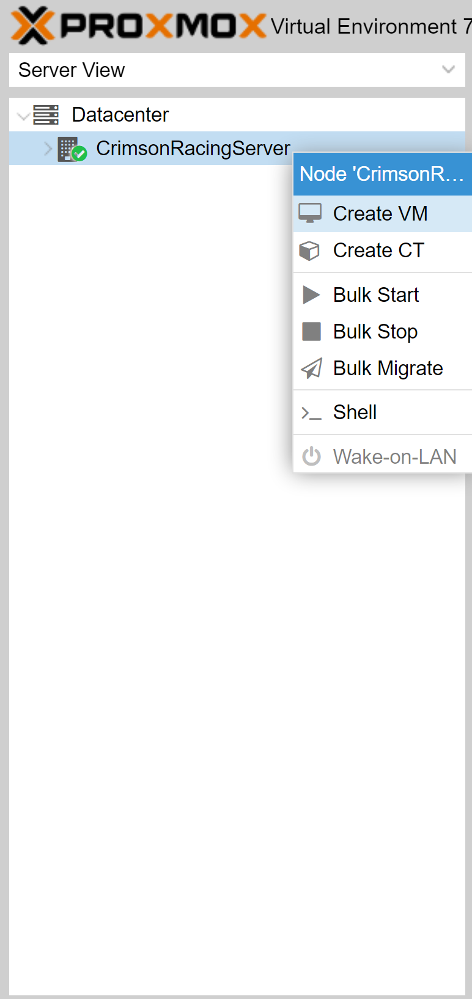
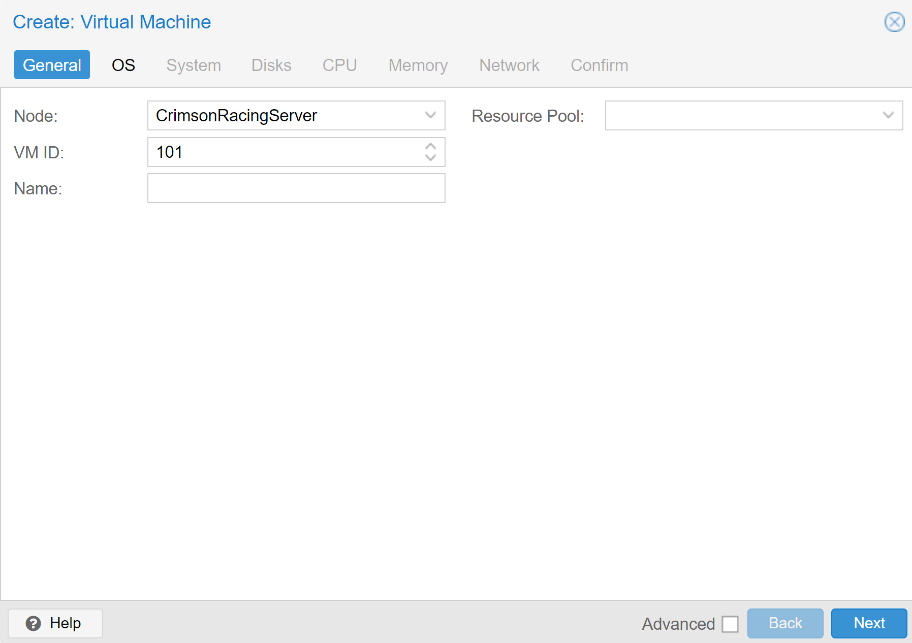
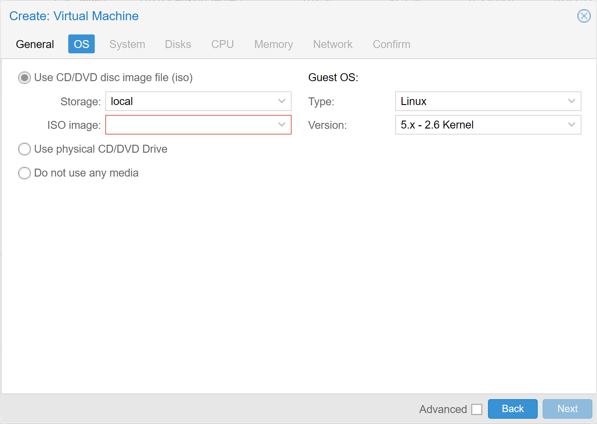
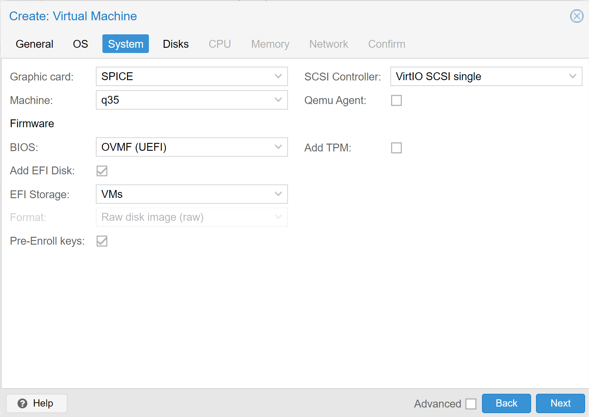
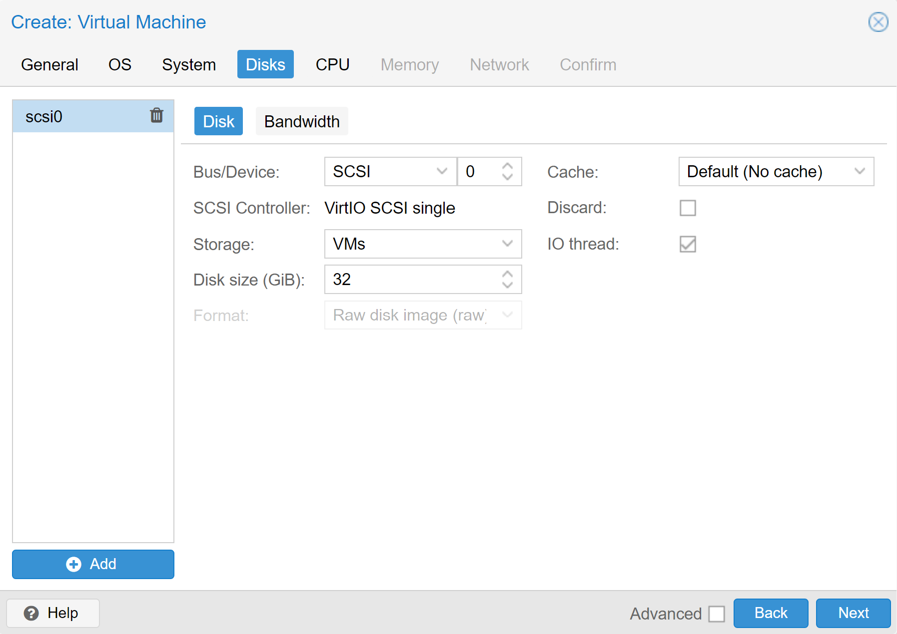
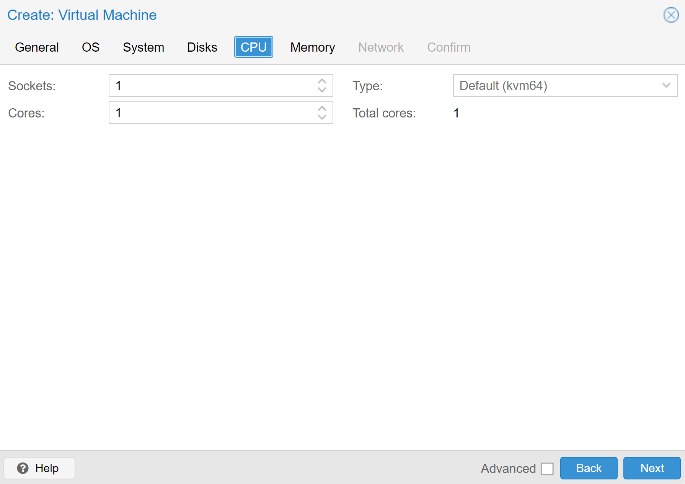
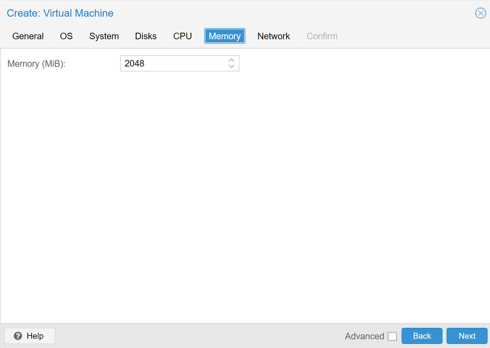
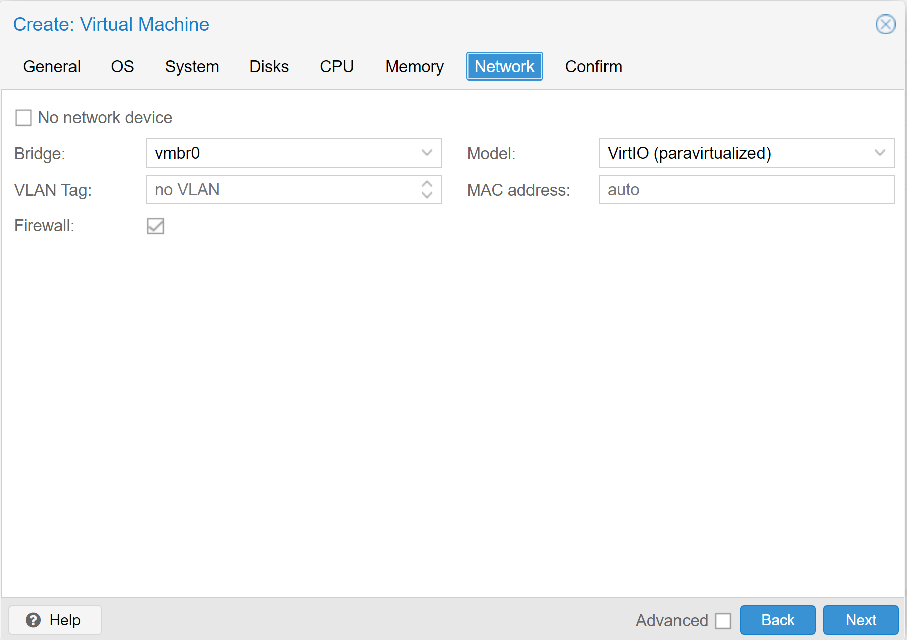
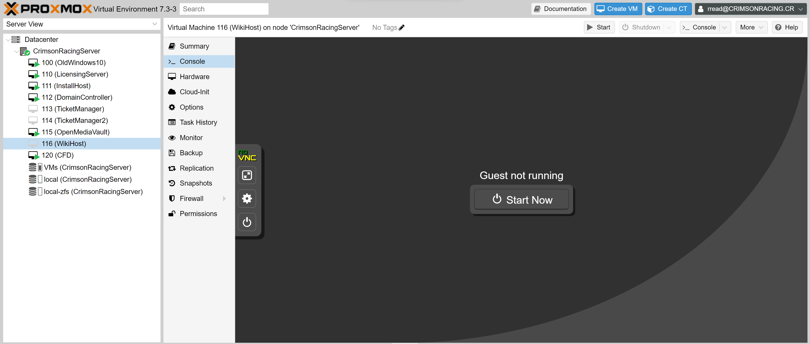

Creating a VM
This is a guide on how to create a VM from scratch in ProxMox. The goal of this page is to walk you through each step of the process, and to tell you what each change made to the default settings does.
Step 1: Create a New VM
{kind=link}
In the top right, under the Datacenter dropdown, right click on CrimsonRacingServer, and select the item labeled Create VM.
Step 2: General Settings
{kind=link}
Here is where you set the general settings for the VM.
Node
Leave the node as CrimsonRacingServer. Unless large-scale expansion occurs, this is the only node we will have.
VM ID
The VM ID is how ProxMox identifies the VM. Services such as the licensing server and the domain controller should have an ID that falls between 110 and 119. User VMs such as the Windows VM should have an ID that falls in between 120 and 129.
Name
Here is where you give a name for your VM. Do not include spaces or special characters, and generally use camel case as a naming convention. (ex. SampleName)
Resource Pool
At the current time we do not have a designated resource pool, however in the future this is where you would assign a VM to a specific one.
Step 3: OS Settings
{kind=link}
This is where you designate what operating system your VM will run on.
Storage
Under this dropdown, you can select which media storage device you want to pull an iso image from. For now, leave this as local.
Iso Image
This is where you choose which Iso image you want to use for your VM. Which image you choose will depend on what the purpose of the VM is.
Guest OS
This dictates what kernel type the VM will run. If you are running anything but a Windows VM, set the type to Linux and the version to 5.x - 2.6 Kernel.
Step 4: System Settings
{kind=link}
This is where you define what system the VM will operate on, as well as what BIOS architecture the VM will use.
Graphic Card
You can either leave this option to default, however I prefer to set this to SPICE, as it is an easier system to interact with.
Machine
Change this setting to q35.
BIOS
Set this setting to OVMF(UEFI).
EFI Storage
Set this to the VM disk
Qemu Agent
Enable this setting. This helps the Proxmox Machine and the VM to communicate.
Step 5: Disk Settings
{kind=link}
This is where you allocate disk space for your VM.
Note
This only covers the Disk portion of the Disks settings page. There is a Bandwidth section, however at the current point in time there is no use for our team to utilize these settings.
Note
Proxmox allows you to create multiple storage volumes for a single VM. However, at the current point in time there is no real need to do so.
Bus/Device
Leave this set to SCSI, and leave the device set to 0
Warning
If you change this to anything else, certain programs such as Solidworks will refuse to launch, as it recognizes that the VM is a vm as opposed to a bare metal system, such as your laptop.
Storage
Leave this set to VMs. This setting determines where the VMs drive will be created.
Disk Size
Setting disk size is a nice guessing game. It is much easier to add to the disk size than to take away, so I suggest starting small.
A good base value would probably be around 10gb.
Cache
leave the cache type set to Default(No Cache).
Step 6: CPU Settings
{kind=link}
This is where you allocate the amount of CPU cores which this VM can take advantage of. Generally, the best amount of cores is the fewest amount of cores, since the server has a finite amount of resources.
Sockets
Leave set to 1.
Cores
This is where you allocate the number of cores. A good starting value is 4. However, if you know that the VM you are creating will need more computing power, feel free to increase that number.
Type
This is where you set the type of CPU core you are using. Change the type from Default (kvm64) to host. To do this, either type in the word host into the search bar, or scroll all the way down to the bottom, and select the host option.
Step 7: Memory Settings
{kind=link}
This is where the total memory allocated to this VM is set. Luckily for us, Proxmox will dynamically allocate memory to VMs. This means that if a VM is set to have 10gb of RAM but only needs 5gb, Proxmox will free up the other 5gb and give them to another VM which needs those resources. However, it is still good practice to set an appropriate amount of memory for a VM to prevent overcrowding of the server’s resources.
Memory (MiB)
Input the value of the VMs allotted memory here, in megabytes. Remember, 1gb = 1024mb.
A good starter value is 2gb, or 2048mb.
Step 8: Network Settings
{kind=link}
Bridge
Set to vmbr0
Model
Set to VirtIO (paravirtualized)
VLAN Tag
Leave as no VLAN
MAC Address
Leave as auto, unless it is required that the VM has a specific MAC address
Firewall
This is optional, as all of this is hidden behind UAs firewall. Most of the time we disable this setting.
Step 9: Finishing Up
Now that you have gone through and set everything to be the correct settings, go to the final confirm menu and click finish in the bottom right corner. Don’t be too worried if any of this got messed up, as most of it can be edited later, after the machine has been created.
{kind=link}
Wait for it to finish being created, and then select your new VM in the dropdown menu under Datacenter->CrimsonRacingServer.
Select the console tab in the page, and then click on the big Start Now button in the middle of the screen to start your new VM.
Congratulations! you have now fully created and started a new VM from scratch on the team server. The next page in this wiki will show you a couple of setup procedures depending on the OS you chose and what the purpose for the VM is.